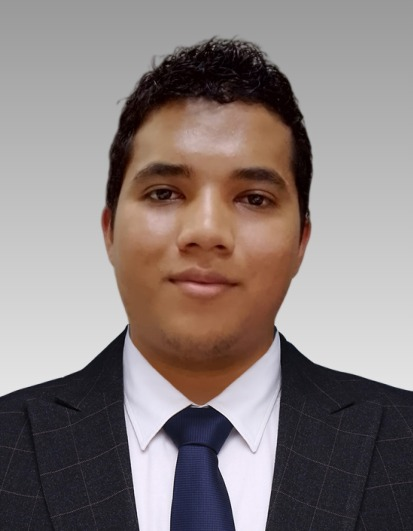

Ellos son la mente y el corazón de nuestra formación. Te presentamos a los ingenieros que te guiarán en tu camino.

Ingeniero de Sistemas Informáticos
Máster en Ingeniería de Software y Sistemas Informáticos
Ver su Perfil CompletoIngeniero en Sistemas Informáticos
Máster en Ingeniería de Software y Sistemas Informáticos
Ver su Perfil CompletoIngeniera en Sistemas Informáticos
Máster en Telecomunicaciones / Máster en Educación con mención en Informática y Tecnologías Educativas
Ver su Perfil CompletoIngeniero de Sistemas Informáticos
Máster en Ingeniería de Software y Sistemas Informáticos
Con una trayectoria en desarrollo de software y liderazgo de proyectos, Oscar es clave en la creación de soluciones innovadoras que impulsan el avance tecnológico de nuestros estudiantes. Su experiencia asegura que nuestros futuros ingenieros aprendan las mejores prácticas de la industria.
Ingeniero en Sistemas Informáticos
Máster en Ingeniería de Software y Sistemas Informáticos
Experto en la arquitectura y diseño de sistemas complejos, el Ing.Enrique guía a los estudiantes en la construcción de bases sólidas para cualquier aplicación. Su visión estratégica es fundamental para desarrollar proyectos robustos y escalables.
Ingeniera en Sistemas Informáticos
Máster en Telecomunicaciones / Máster en Educación con mención en Informática y Tecnologías Educativas
Es una fuerza en la integración de tecnología en la educación, haciendo que el aprendizaje sea más interactivo y accesible. Su doble maestría le permite innovar en la pedagogía digital, preparando a los estudiantes para los desafíos del futuro.